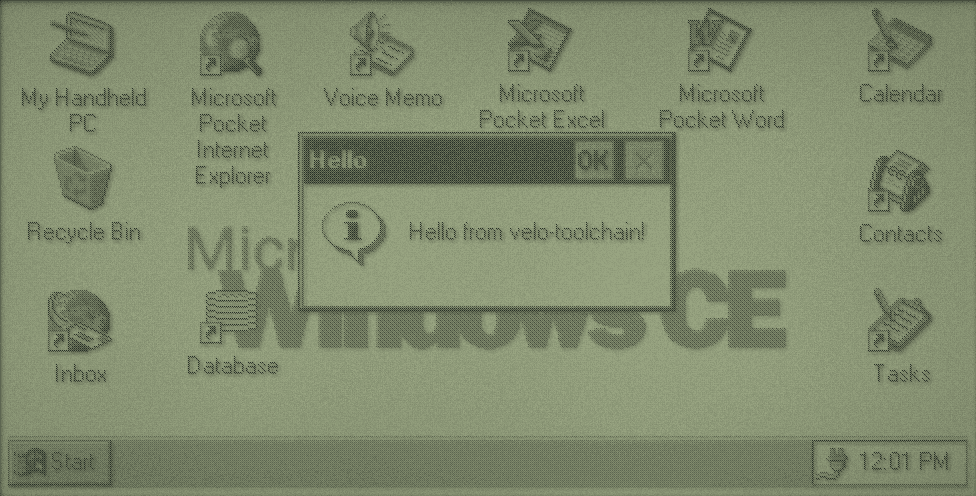
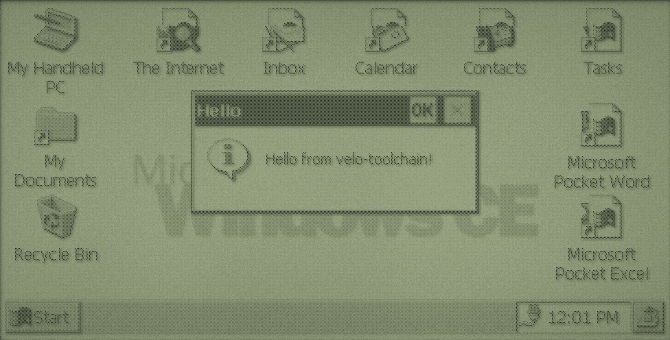

The Machine
The Philips Velo 1 is a 1997 Handheld PC: a clamshell with a keyboard, a wide touch screen and a stylus, running Windows CE from ROM. Programs for it are ordinary Windows programs in spirit, but small, Unicode-only and built for one fixed screen.
| Part | What you get | What it means for your code |
|---|---|---|
| Processor | Philips PR31500 (compatible with Toshiba's TX3912), a PR3910 core (MIPS I, compatible with the R3000A), little-endian, no floating point unit | Floating point is done in software: correct, but slow. 64-bit integer division is a library call. Unaligned memory access faults. |
| Screen | 480 x 240 pixels, touch sensitive, backlit, greyscale: 4 greys on CE 1.0, 16 on CE 2.0 | Design for 480 x 240 minus the taskbar, in black, white and two greys. |
| Input | Keyboard and stylus | A tap is a left mouse click. There's no right button and no hovering. |
| Memory | 4 to 16 MB of RAM, shared between storage and running programs | Every allocation matters. A large file you save takes memory from programs. |
| Storage | The object store in RAM (files, registry, databases), the ROM, and a PC Card slot | Files live at paths like \My Documents\notes.txt. A card appears as a folder in the root. |
| Connections | Serial port, and PPP networking over it | Winsock works once the Velo is connected. There's no TLS: chapter 6 explains the proxy. |
velo-emu emulates all of this, which is where you'll do most of your testing. It runs the original ROMs, so what works there almost always works on a real Velo.
CE 1.0 and CE 2.0
The Velo 1 shipped with Windows CE 1.0. Philips later sold a CE 2.0 upgrade on a ROM card. They're different enough that velo-toolchain builds a separate program for each: -DVELO_CE_VERSION=1 or 2, which sets _WIN32_WCE to 100 or 200 and links against that system's DLLs.
| CE 1.0 | CE 2.0 | |
|---|---|---|
| Greys | 4 (2 bits per pixel) | 16 (4 bits per pixel) |
| PC Card folder | \PC Card | \Storage Card |
Functions exported by coredll.dll | 512 | 934 |
| Other DLLs you can link | commctrl, winsock | Those, plus commdlg, ole32, oleaut32, ceshell |
| Character set conversion | None: convert UTF-8 yourself | MultiByteToWideChar, WideCharToMultiByte |
| Find your own program's path | Not possible | GetModuleFileNameW |
| Dialog helpers | GetDlgItem, SetDlgItemInt, GetDlgItemInt only | Also SetDlgItemTextW, GetDlgItemTextW, SendDlgItemMessageW |
| Pens | CreatePenIndirect only | Also CreatePen |
Write one set of sources and build them twice. Where CE 2.0 has something CE 1.0 lacks, either avoid it or put it behind #if _WIN32_WCE >= 200. The toolchain's headers know what each ROM exports, so calling something the target doesn't have stops the build with the reason:
error: 'GetModuleFileNameW' is unavailable: not in Windows CE 1.0Not the Windows You Know
If you've used Win32 on a desktop, most of it carries over. These are the differences that matter from day one.
Unicode only
Every function that takes text takes 16-bit WCHAR strings, and has a W on the end: MessageBoxW, CreateWindowExW. Write string literals as L"text". There are no A versions to fall back on. Network protocols and files are usually bytes (ASCII or UTF-8), so you'll convert at the edges: chapter 5 shows how.
No C library
There's no printf, malloc, strlen or fopen. velo-toolchain gives you memcpy, memmove, memset and memcmp, plus the compiler's helpers for floating point and 64-bit maths. Windows CE gives you the rest in its own form:
wsprintfWfor formatting text (integers and strings, no floating point).LocalAllocandLocalFreefor memory.CreateFileW,ReadFileandWriteFilefor files.- Wide string functions from
coredll.dll, such aswcslen,wcscmpandwcsstr, whichwindows.hbrings in.
No console, no current directory, no drive letters
Programs start at WinMain and talk to the user through windows. There's nowhere for stdout to go: use OutputDebugStringW and the debugger. Every path is absolute from the root, \, with backslashes. There's no C:, and no current directory, so data.txt on its own doesn't mean "next to my program".
One screen, one window
A CE program normally has one top-level window that fills the screen above the taskbar, with no title bar. Menus and buttons go on a command bar at the top, which also holds the close button. Starting a program that's already running brings the existing window forward instead of opening a second one.
Small everything
A few megabytes of RAM, a slow processor and a serial connection measured in kilobits. Allocate what you need, free it promptly, avoid floating point in loops, and expect the network to take seconds. CE runs at most 32 processes at a time.
MIPS manners
The processor can't read a 32-bit value from an address that isn't a multiple of 4. Normal C code is fine, but casting a pointer into the middle of a byte buffer (a network packet, say) and reading an int through it will crash. Copy with memcpy or read byte by byte. Integer division by zero doesn't trap: it gives a meaningless result.
A Tour of the Desktop


hello example over the desktop. The taskbar along the bottom has the Start button, a button per running program, and the clock.A few places you'll use while testing:
- Start > Run
- Type a full path, such as
\PC Card\HELLO\hello.exe, to start a program. The automated screenshots in this book are taken this way. - My Handheld PC
- The file manager. The root folder shows
Windows,My Documents,Program Filesand the card. \Windows- System files, most of them in ROM. Programs often install here, and DLLs normally must.
\Windows\Programs- The Start menu's Programs folder. A shortcut here appears under Start > Programs.
- Control Panel
- Settings, including System, which shows how memory is divided between storage and programs.